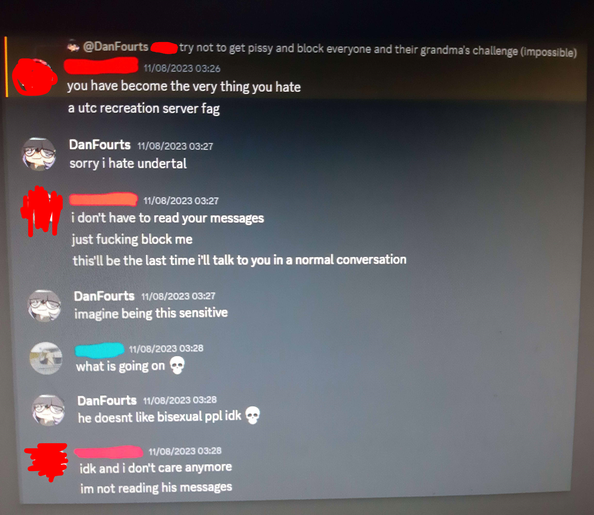

Now that I've caught your attention with that award wining title, let’s talk for a bit about why I decided to write this.
I wouldn't exactly call this a blog entry. Think of it as a hybrid between shitty life advice (that's probably obvious to someone else but my pea sized brain), and a much needed venting session cause I really need it right now.
Since in all blogs I write I always deviate from an unbiased standpoint and end up sharing my own thoughts and conclusions, I know that I’m (ironically) being a hypocrite,
but hey, at least I'm honest about it, and objectivity can be a bit overrated sometimes, but that's for you to judge.
Now, I have to say up front that I’m generally a pretty tolerant and open-minded person, and if you’re a person that's part of the LGTBQ+ community, or any kind of creative person, then you have my full and unreserved support.
I encourage everyone reading this to go off and create the next big thing, do something awesome, do what you’ve always wanted to do but felt too inhibited to try, and don't let anyone discourage you or stop you from what you love and are passionate about.
It's about damn time you give the world a piece of your awesomeness.
If you know the people I mention in this post, don't go after them. If anything, that will cause the fire to grow bigger, and I don't want anymore shit happening to ANYONE or ANYTHING.
With that disclaimer out of the way, let’s talk about how a declining a simple decision could have been a massive improvement over my life, and possibly the life of others.
Long story short, some time between 2018/2019 I joined some Undertale Music discord server
(Great start considering the amount of "drama" that has come out of the Undertale Musician community, but that's not for me to judge).
I was a very active person in that old server and that led me to meeting a group of mfers, and our interests lined up pretty well. Let's call them "PPG" for now.
I remember PPG being really nice people at the time so we started bonding and shit, though that could be me being nostalgic.
Fast forward some time, one of the admins changes the rules.

Now, that may seem like a very obvious thing, but PPG didn't take it too lightly. You don't want to believe how many pages and pages of n-word (the majority hard r) were written that day.
I forgot to mention, PPG's sense of humour at the time boiled down to "black people bad george floyd bad".
Anyways, it ended with one of the PPG members creating a server that we'll call "Paradise".
All the people I knew left the UT Music server and opted for Paradise instead.
I decided to join Paradise. That was my biggest mistake.

In a nutshell, Paradise was like a glorified uncensored/unrated/uncut version of your stereotypicial toxic Undertale discord server full of egocentric people.
You had gore (Ronnie McNutt, the 1444 guy, various styles of shock content and graphic accidents...), racism, homophobia, transphobia, hatespeech, hell you name it.
Now, the server wasn't just made for self proclaimed "based" people to do their shit, it was made for recreating Undertale tracks. That's a very common thing believe it or not.
The funny thing is that progress was actually being made. In the middle of all the unhinged chaos of a shithole that place was, songs were being recreated to unhealthy levels of accurateness.
The owner of the server was top tier, she probably was the one that recreated the most tracks at a scary level of accurateness, her determination was overwhelming to say the least.
That may seem like a very dumb thing to praise, but when you start to recreate Toby Fox's tracks you enter a world of weird unconventional techniques and questionable creative decisions.
Point being, I was very close with these people, and I still to this day have NO idea how I managed to tolerate all the toxicity in there.
Fast forward a year, the server owner can't handle the chaos after revealing she is transfem and leaves after transfering me server ownership. (I used to be a very trusted member)
A month later one of the most active members leaves, stating that his mental health had gone to shit and that he needed to take a break. It's been 2 years.
More people left Paradise, only the most hardcore people stayed.
Even I had to take a break once. If anything it made things worse since I'm so used to being chronically online all the time.
Things stayed cool for a while until a very respected member revealed they're trans.
They got banned immediately, Paradise did a 180º and changed their opinion on that trans member so quickly it wasn't even funny.
The shitstorm that followed after, told my guts to give ownership to someone else and leave.
Instead, my dumbass kept joking that it was an April fools thing.
Some time after, one of the biggest members gets this message

He used to be a member of Timmy Turner's Grand Dad and Silvagunner. He's currently a moderator at very big server about finding videogame music instrument sources.
Anyways, he and some other people planned on raiding their servers with scat and gore gifs but thankfully that never happened.
It's a very common thing for this Paradise member to raid servers with gory gifs and shit. We had (non nsfw) channels to test Discord filters and it was a shitshow of gore and porn.
He planned more than once to raid several servers, all to no avail.
Some time passed and a couple of my friends joined Paradise. Things stayed normal for a while, until one of them came out as trans and got banned.
My mental health couldn't take it anymore and I transfer ownership to the member I thought was the fittest to run the server, with the excuse that I had lost interest in the project.
A couple days later, one of the most active members started with his usual "trans people bad canada bad" ranting bullshit.
I told him to stop being so sensitive and an ignorant, he then proceeded to block me.
This specific member is very special. We'll get to that later.

A couple days after he blocked me he started with his ranting bullshit, then this happened.
Mere seconds after I took that screenshot, I got banned from Paradise.
Some people would be fucking furious. I was happy.
actually i was more than happy lmao have you seen this shit

At this point you might be yelling at your screen wondering why I didn't just leave. Why I stayed in that shithole of a place.
It was out of fear. Like I mentioned before, some big people in Paradise are well known moderators and have helped the VGM Rips community.
I kept thinking that if I leaved Paradise everyone would shit talk and say shit about me for being an incompenent owner or some shit.
You could say I'm being very paranoid, and I admit I can be very paranoid at times, but former members of Paradise were also big people in the VGM Rips Community,
and when they left Paradise you would not believe the amount of backlash and hatespeech that was being spoken behind their backs.
There's also this special member I talked about before. He's helped doxxing people in the past, as well as hidding keyloggers in fanmade Undertale Game Engines.
Now, that is not 100% confirmed since the keylogger thing was supposed to be a joke. Be it a joke or not, that's one hell of a thing to do.
Anyways, no more negative shit. I was finally free from that place and I could breath calmly knowing that I wouldn't have to deal with them mfers no more.
..And then a couple weeks after I forgot about that weird place, I noticed that I was gone from a group chat I was very active in.
I talked with the owner of that old group. He told me some dude was going around revealing my full real name and saying I sent him gay pics and memes and because of that I was a pedophile.
Now that may seem like one hell of an allegation, cause it is, and I'm going to address it.
 |
 |
|---|
That dude saying shit about me was none other than the dude who blocked me for being a bisexual femboy,
which I consider funny considering he often said this kind of stuff to me in the past.
About the gay pics and memes, they were for the sole pourpose of pissing that member off since I had an incredible grudge against him for the longest time.
I never had any sexual interest in him, anyone even remotely related to him, any Paradise members or anyone below my age.
People who make false sexual harassment accusations are not only evil because they may potentially ruin someones life,
but also evil because it makes it harder to help people who have actually been sexually harassed.
I give my condolences and support to people who have been falsely accused of similar shit, and specially to people who have been victims of harassment.
No one should be deserving of such horrible shit.
Now, you might be thinking that I'm a fucking idiot for sending him shitty gay memes instead of ignoring his homophobic shit,
and a massive hypocrite for being a bisexual femboy around homophobic people when I stated that I was scared of the shit they do, and you'd be right.
In many ways I regret sending him shitty gay memes. Even as much as I hate him, it's not the proper thing to do, and if anything, it might have caused his homophobia to grow bigger.
To be fair, If some mfer kept sending me shitty danganronpa memes I would go postal too so I want to apologize to him for that.
But the thing I regret the most is joining Paradise in the first place.
After the chaos that happened in that UT server, it should have been obvious that it wasn't going to be a very beautiful place.
Ironic considering the name "Paradise".
If you are a person who's friends are like Paradise, go get new friends. I know that is easier said than done, but it's better to prevent than fucking hell being released.
And don't give a fuck about those motherfuckers saying shit like you "fell off" or that you're "not funny anymore" or that you've "changed" or some stupid dumb shit.
Those people are fucking sad to begin with, so it's very usual for them to lay their shit on other people.
Now, even as much as I hate Paradise, there are a couple persons I don't have any beef with.
There's this guy who owns a lot of vintage synths and cool vintage computers. He handles everything like a madman, treating things how they should be treated. If there's a person I can TRULY say is based then it's definitely him.
There's also this other person who excels at making accurate recreations, right up there with Paradise's creator, and I noticed they are very accepting of LGTBQ+ stuff so I suggest them to leave Paradise for the sake of their own sanity.
To all the people in Paradise that are still somehow sane, I suggest you leave that hellhole of a place and make a new server called "Hell" or some shit. Can't be as bad as Paradise.
If you're some curious reader and you read through all that shit, then I apologize for wasting your time, and I suggest you click off this horrid page and do something more productive.
Or not, procrastination can be one hell of a drug.
And to that very special member I mentioned before, if you're reading this then I have a message for you.
One that I wish I could've told to you personally but never got the balls, nor had the chance to do so.
How can you be depressed, borderline schizophrenic, have panic attacks that could put a heart attack to shame, mental breakdowns every like 3 seconds, be an asshole and if that wasn't enough, complain about LGTBQ+ or black people while being a complete ignorant about those topics? Pick a single struggle, not 117
You'd rather focus on complaining about dumb shit more than focusing on improving your mental health, failing to realize that drinking alcohol and complaining 24/7 about bullshit no soul gives a shit about is going to make everything worse.
Being in agony all the time is no excuse for using that bigoted energy to fix your shit. Instead, you choose to hate on other people's lifestyles, not considering their feelings. You're a real piece of shit for treating them like that.
I'm not talking about solving world hunger or achieving world peace. Just, fixing your own fucked up head and turning all that passion for bigotry into something even remotely productive, E.g. making a kick ass symphonic metal track, or a cover. You excel at those.
Because at least THEN you'd get to be a troll and an asshole on Discord but live a happy life without being overly depressed or having a mental breakdowns every 3 seconds or some shit.
It would be so funny if you turned down your incredible ego and realized that not being an insufferable pain in the ass could actually work wonders, but I know you won't. You never will.